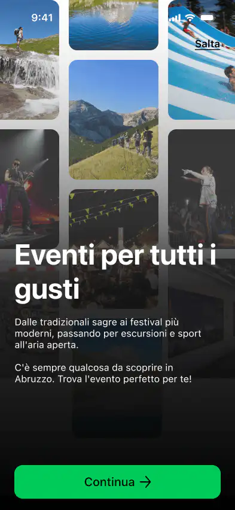
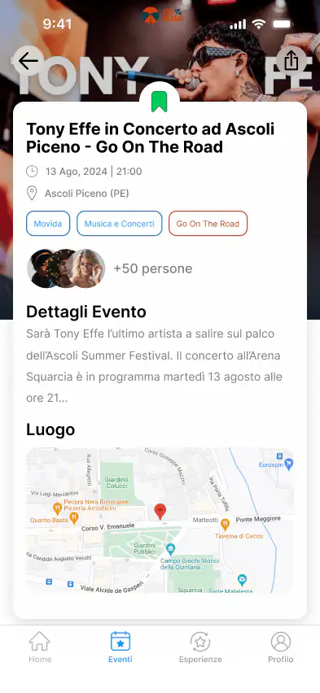

Personal Project · UX/UI · iOS App · 2024
Abruzzo Experience
Abruzzo has a lot to offer. None of it is easy to find.
As someone from Abruzzo, I have watched the region's experiences stay invisible online while Tuscany and the Amalfi Coast dominate every travel app. Events, activities, and local experiences are scattered across municipal websites, Facebook groups, WhatsApp chats, and niche organiser pages. For tourists, that means missed opportunities. For locals, it means never knowing what is happening in their own backyard.
The goal was a single platform connecting tourists, residents, and local businesses — centralising discovery without flattening the character of the region into a generic travel feed.
The gap wasn't in Abruzzo. It was in the infrastructure around it.
Competitive analysis of Airbnb Experiences and Abruzzocosafare, combined with personal experience as someone from the region. The gap wasn't in Abruzzo itself — it was in the digital infrastructure around it. No single app serves tourists, locals, and businesses together.
One app. Three audiences. One visual identity rooted in the region.
Identity
Colours from the Abruzzo flag
The visual identity was grounded directly in Abruzzo's regional flag — not a generic travel palette. Green and white with red accents. The design immediately communicates where it belongs.
Structure
Centralised discovery
Events, activities, and local businesses in one feed. Filterable by category, date, and location — so both a tourist planning a weekend and a local checking what is on tonight find what they need.
Audience
Wireframes across three user journeys
Low-fidelity wireframes were built separately for each of the three user groups before moving to hi-fi, to ensure the same architecture served different entry points and goals. Accessibility designed in from the start: WCAG AA contrast ratios, large touch targets for one-handed outdoor use, and screen reader labels on every interactive element.
Multilingual
Built for Italian, English, and German
Abruzzo's audience spans multiple languages. The UI was designed with text expansion in mind — Italian labels are ~20% longer than English equivalents, and German compound nouns require even more space. Layouts flex without truncation. Date and time formats follow locale conventions.



Discover Event detail Explore nearby
In a real-world scenario, I would validate these designs with user interviews across all three groups — tourists visiting Abruzzo, local residents, and event organisers or business owners. I would run usability testing of the onboarding flows for each persona, and A/B test the discovery feed algorithm against the current scattered approach. Multilingual testing with native speakers of Italian, English, and German would ensure no truncation or cultural misalignment.
Explore the app.
Prototype covers discovery, event detail, and the local business view across all three user journeys.
View Figma Prototype